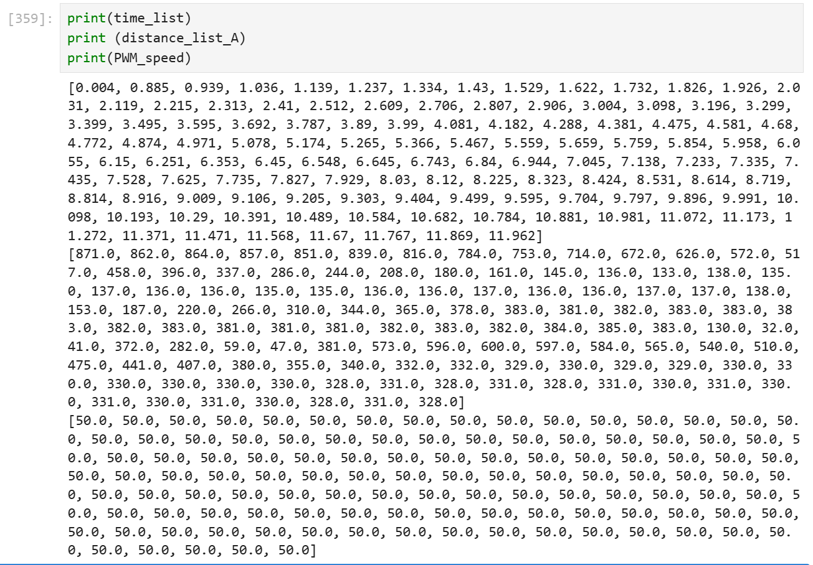
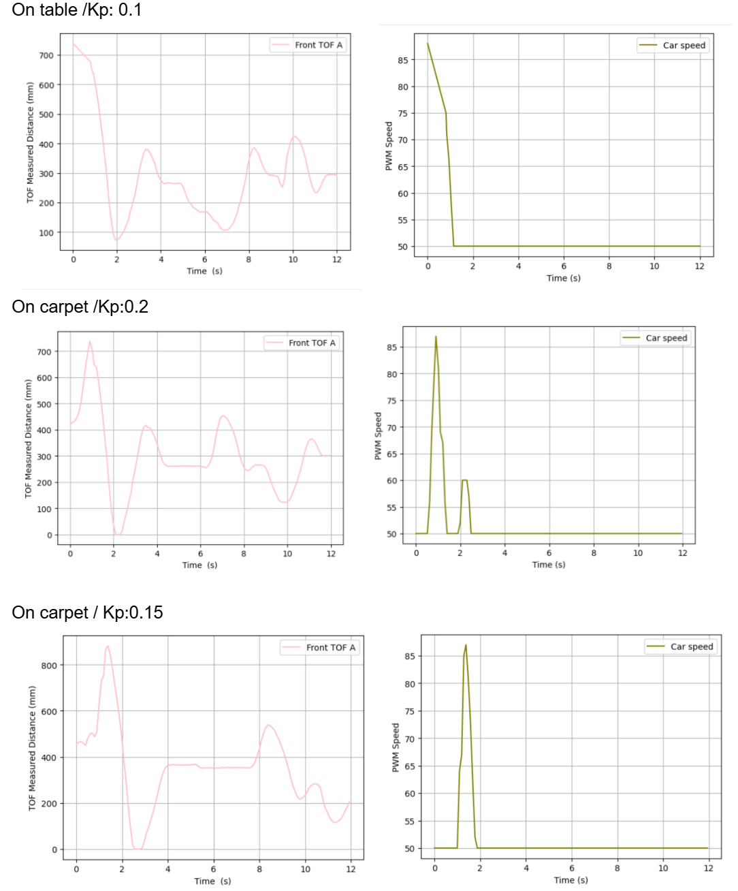
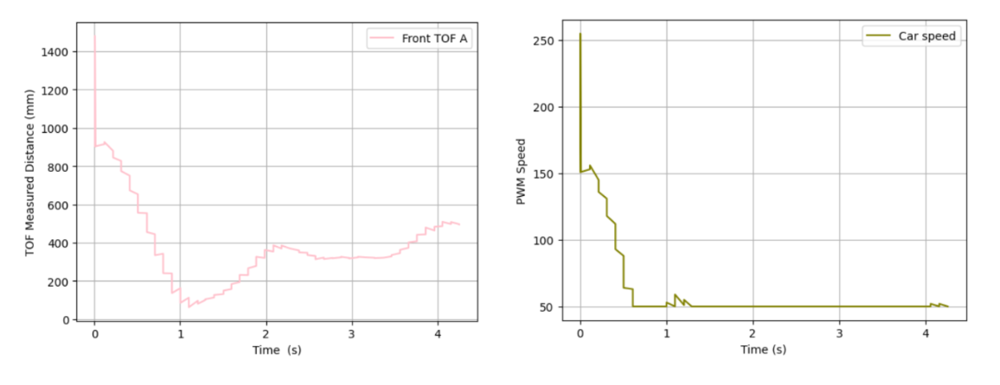

Lab 5：Linear PID control and Linear interpolation
Pre Lab
For this lab, we want to play with PID control, specifically position
control for this week. We want to implement PID control for a certain amount
of time (in my case, 12 seconds).
In terms of sending and receiving data, BLE is only used to trigger the starting
and retrieve logged data. Code on python sends a start command START_P_RUN.
Once the command is received, a boolean running is set to be true,
while timestamp at this point is set to be the starting time. Inside the loop, I have the
TOF measurements conducted which gives input for porportional control and are collected
into arrays. My instincts made it to have motors taking in speed within the same if statement.
However, checking TOF data ready takes time which caused motor cannot adjust speed according
to distances quickly, so I placed helper function of motor taking action outside the if
data-ready range.
void loop(void)
{ ...
if (running) {
if (distanceSensorA.checkForDataReady()) {
d_mm_A = distanceSensorA.getDistance();
fresh_TOF = millis();
distanceSensorA.clearInterrupt();
Compute_P(d_mm_A);
collect_TOF(d_mm_A);
}
else {
Compute_P(d_mm_A);
}
motor_action(Output);
...}
}
Data including timestamp, distance, PWM speed are not sent until time hits the boundary, which prevents a smaller loop frequency. After robot stops, arrays are sent by BLE. Similar to previous labs, each message of data is formatted into estring, which gets parsed by notification handler and stored into separate lists in preparation for analysis and plotting. Here are my helper functions: Compute_P, motor_action, and collect_TOF.
void Compute_P(double Input)
{
dis_error = Input - Setpoint; // calculate the distance from target postion
/*Compute PID Output*/
Output = kp * dis_error; // (+ ki * errSum + kd * dErr) P control only!
speed = constrain(abs((int)Output), 50, 255) ; // constrain speed with the running PWM range tested from lab 4
}
void motor_action(double dis_diff){
if (dis_diff > 10){ //leave a tolerence for TOF reading
forward(speed);
//Serial.println("Too Far... I need to go closer!"); // Comment out print to react faster
}
else if (dis_diff < -10) {
backward(speed);
//Serial.println("Too close... I need to go farther!");
}
else {
stop();
//delay(1000);
}
}
void collect_TOF(float d_mm_A){
if (log_index < LOG_SIZE) {
time_arr[log_index] = fresh_TOF - start_time;
dist_arr_A[log_index] = d_mm_A;
motor_arr[log_index] = speed;
log_index ++;
}
}
I chose proportional control only because its quick response and ease for tuning. It only has one variable --proportional gain -- to adjust. It is relatively easy to hand on compared with PI control or PID control. I do recognize that it has some cons, such as it can only approach to setpoints to infinity in infinity time (error never zero); high Kp made it really easier to omit the setpoint and crash to the wall. It is okay to use at this point since the system/question is not complicated.
Task 1 Position Control
The deadband of motor is at 35 for PWM speed from lab 5. I set the boundary to be within [50, 255]
to ensure the smooth running of thw car, which is also the range of my output after conversion. In
consideration of a reasonable range of proportional control gain,
the input value can be depending on the maximum value of long-distance mode of 4,000 mm. The resulting
range can be very big. Through testing, the range is approximately from 0.05 to 0.2. Gain larger than 0,2 easily
got car crash to the obstable regardless of intervention from setpoint.

There are certain periods in the time from measured displacement graph where car performed a linear speed. The maximum linear speed among them is 870.75 mm/s(511.25mm/s, 684.68mm/s, 870.75 mm/s), by using linear data and time stamp to calculate.
Watch the video of car performing position control on carpet floor with Kp of 0.15.Watch the video of car performing position control on carpet floor with Kp of 0.2.
Watch the video of car performing position control on lab table with Kp of 0.1.

In terms of frequency, my TOF can collect 123 samples within 12 seconds consistently, so the
frequency is approximately 10.25Hz. Compared with TOF, controller runs a higher frequency, which results
in cases that proportional control and motor action updates every loop run using newest
distance reading while TOF does not collect new reading.
Something that I did not get a chance to implement here is to have a braking motion. Now my car speed is really
constrained in a range that car can run. It will only stop when times come to the end or it is right at the
target position. Now the speed would like to bring car over the position and then it is activiated to run the opposite
direction. It would be faster or more efficient to activate the-other-direction run as a way to brake. A more clear way to
explain it is that you would tap on backward on remote control when you tried to do stunt on a forward-fast-running car.
Task 2 Linear Extrapolation
To fill in more data from linear extrapolation to estimate the location and take action based on that, I updated the code with following changes. The performance showed that car can actually stop without crashing to the wall with higher kp and bigger initial distance difference, and it spent less time adjusting near the setpoint/ target position. Besides, it achieved to collect far more data samples than before (1,000 > 123).
if (running) {
if (distanceSensorA.checkForDataReady()) {
last_tof = new_tof; //mark the collected data as OLD
last_tof_time = new_tof_time;
new_tof = distanceSensorA.getDistance();
new_tof_time = millis();
d_mm_A = new_tof;
fresh_TOF = new_tof_time;
distanceSensorA.clearInterrupt();
if (new_tof_time > last_tof_time) {
tof_slope = (new_tof - last_tof) / (float)(new_tof_time - last_tof_time); // mm per ms
}
Compute_P(d_mm_A);
collect_TOF(d_mm_A);
}
else {
estimate_dis(d_mm_A);
Compute_P(est_d_mm_A);
collect_TOF(est_d_mm_A);
}
motor_action(Output);
...}
void estimate_dis(double Input)
{
unsigned long t_now = millis();
float dt = (float)new_tof_time - last_tof_time;
est_d_mm_A = new_tof + tof_slope * dt;
}

Watch the video of car performing position control with extrapolation with kp of 0.25.Reference
Thanks to Michelle Yang, Jack Long and Zoey Zhou for discussion about slow reaction/data logging rate.
I used chatGpt for clarifying questions, debugging such as finding missing parathesis, and brainstorming
the structure to build pre-lab code.